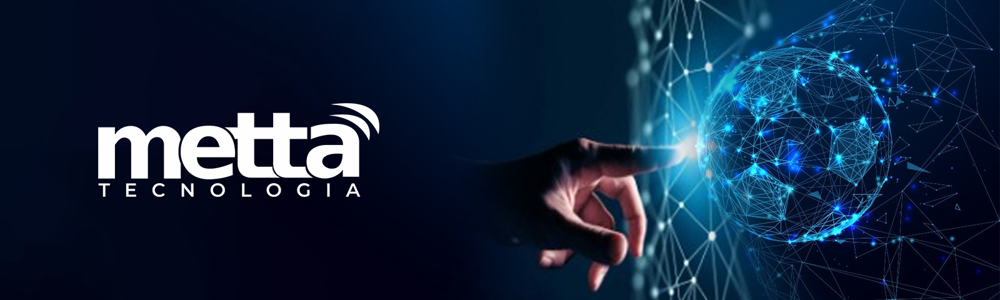

Implantação, Gestão, Monitoramento e Manutenção Preventiva de Servidores em Plataformas Linux ou Microsoft, Virtualizado ou Físico, de acordo com a necessidade da sua organização.
Solução corporativa completa e segura com criptografia militar de 256 bits contra ataques de Sequestro de Dados ou desastre físico, assegurando a integridade dos dados da sua empresa e seus clientes.
Atendimento remoto ao usuário, solucionando problemas de forma rápida e eficaz para solucionar problemas diários.
Manutenção preventiva e corretiva em Notebook, Desktop, Impressoras e Nobreaks.
Somos todos reféns de nossas informações. O backup existe como forma de prevenir que os arquivos sejam apagados, garantindo a integridade dos dados, de configurações, bancos de dados e arquivos de usuários.
Responsável por conectar e suportar todos os equipamentos de tecnologia da sua empresa, desde as estações de trabalho dos usuários até os mais avançados servidores, integrando os processos do seu negócio.
Responsável por conectar e suportar todos os equipamentos de tecnologia da sua empresa, desde as estações de trabalho dos usuários até os mais avançados servidores, integrando os processos do seu negócio.
Aqui você encontra produtos dos melhores fabricantes, com preço justo, com garantia e formas flexíveis de pagamento.